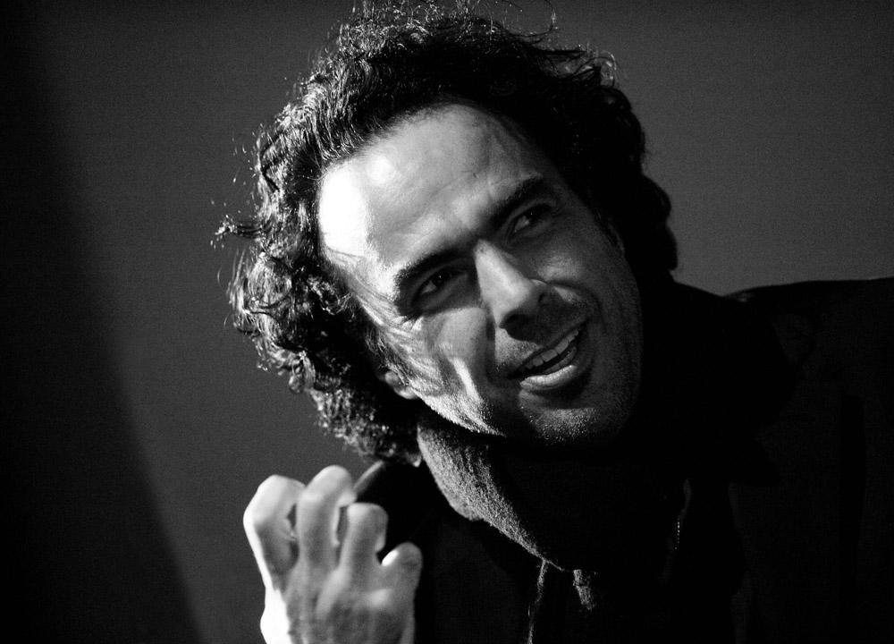

I have admired this filmmaker since I first came across his work in 2003. The first film I saw was 21 GRAMS. It was Iñarritu´s first English language feature and his first film produced in the United States. I remember how moved I was by the beautiful cinematography of Rodrigo Prieto. 21 GRAMS had an incredibly honest and heart breaking story, as well as an innovative structure. I had never seen anything in a cinema quite like it before. Soon afterward, I found Iñarritu's first feature, AMORES PERROS, on DVD. I realized that this director was a new cinematic voice that crossed borders, languages and cultures.
For the past 14 years I have gone to each of Inarritu's films as they have come to cinemas and I have been deeply moved by each and every one. I continue to look forward to their release dates and I am sure I will do so well into the future.
Films:
For a November 2017 speech given by Iñarritu - after having recieved a special Oscar for the VR project, CARNE Y ARENA, at the Governors Awards in Hollywood, click the following link.
For a beautiful documentary called A WORLD UNSEEN, about the making of THE REVENENT, click here.
For Iñarritu´s IMDB page, click here.
Life and death are illusions. We are in a constant state of transformation.
- Alejandro González Iñarritu